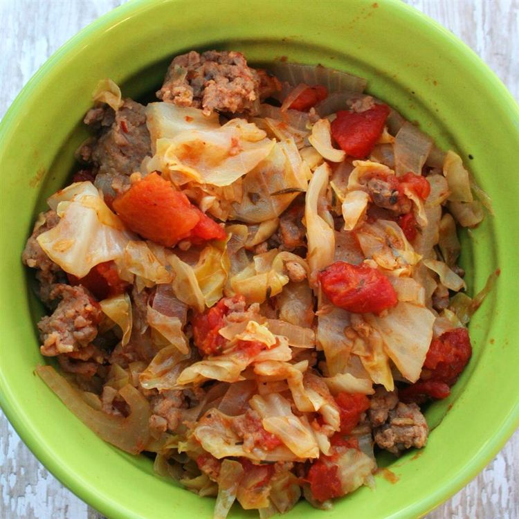

Paleo Ground Beef and Cabbage
This classic dish is simple, but packs a powerful
punch of taste! You may be accustomed to eating ground beef and
cabbage, but did you know that it is also a perfect choice if you
are on a paleo diet? With just a few ingredients, you can eat like
your paleolithic ancestors...without all the running from wild
animals!
Note: Do not drain the meat after cooking. This will diminish the flavor! For this recipe,
90/10 ground beef is recommended.
Ingredients:
- 1 large head cabbage, finely chopped
- 1 (14.5 ounce) can diced tomatoes with juice
- 1 onion, halved and thinly sliced
- 1 tablespoon Italian seasoning
- Salt and ground black pepper to taste
- 1 pound lean ground beef
Steps:
- Step 1 (5-10 mins): Use Dutch oven or large pot to cook cabbage,
tomatoes with juice, onion, Italian seasoning, salt, and pepper over low heat. Stir until
it begins to simmer.
- Step 2 (45 mins): Add lean ground beef on top. Cover and cook,
while stirring occasionally, until ground beef is cooked through and cabbage is tender.